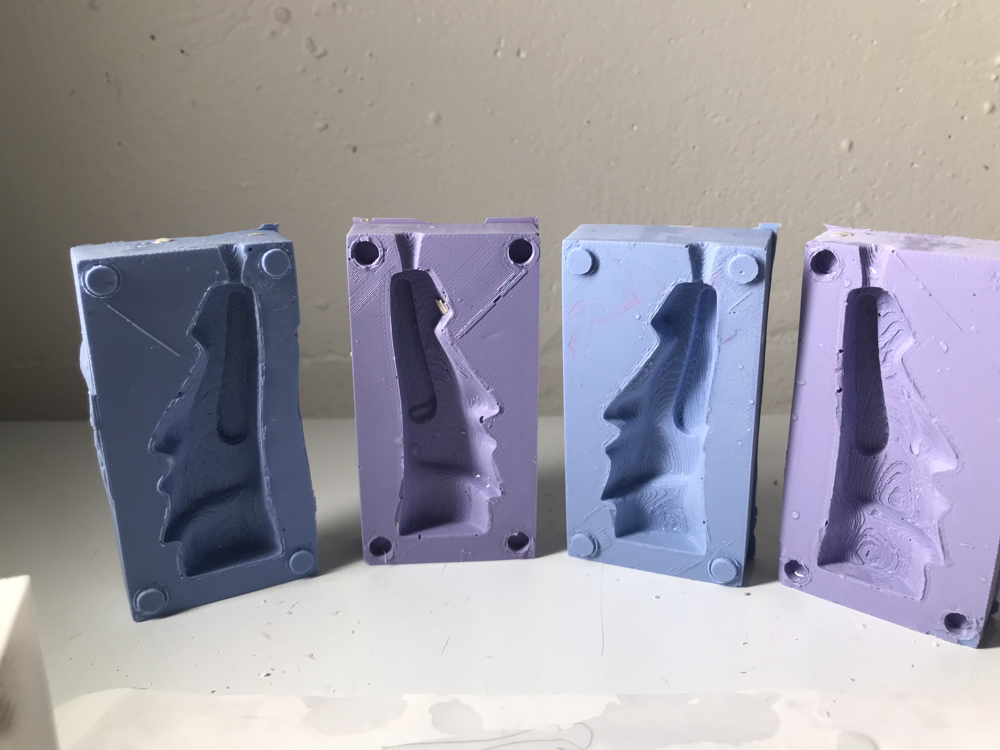
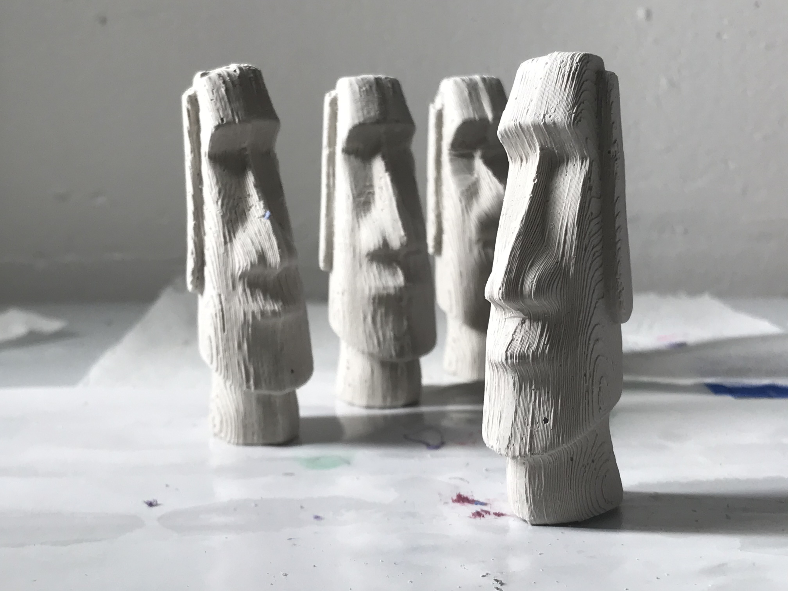

Prints and Molds and Casts!
I had a hard time with figuring out how to make keys to align the molds. I decided to cast some silcone and see what happens then correct after physically seeing the molds.
Painted Castings!
I made .
Epoxy and Wax Casts!

I started as a voltive holder, but I wanted to cast something rather than only have a 3d print. I tried some molds filled with epoxy and wax. I had just enough Oomoo to make a two wax candle molds using the Vonoroi Attractor from Parametric House. I made four candles and attempted 3 Moai figures candles. Each candle I placed a Vonoroi pattern. One pattern stuck out proud over the wax to leave dramtic shadows. THe Moai din't cast very well through the small sprues.